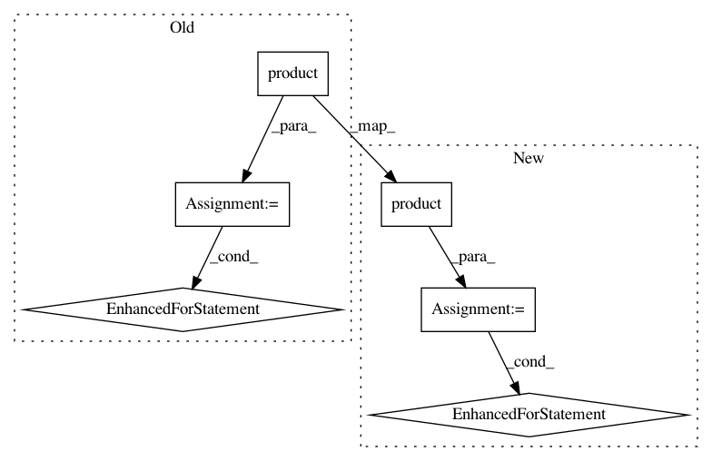

790ff93e20cc36e15dfd039924e782cc559a67d7,qiskit/aqua/operators/op_converter.py,,to_weighted_pauli_operator,#Any#,32
Before Change
if operator.dia_matrix is not None:
possible_basis = "IZ"
// generate all possible paulis basis
for basis in itertools.product(possible_basis, repeat=num_qubits):
pauli = Pauli.from_label("".join(basis))
trace_value = np.sum(operator._matrix.dot(pauli.to_spmatrix()).diagonal())
weight = trace_value * coeff
if weight != 0.0:
paulis.append([weight, pauli])
return WeightedPauliOperator(paulis, z2_symmetries=operator.z2_symmetries, name=operator.name)
elif operator.__class__ == Operator:
warnings.warn("The `Operator` class is deprecated. Please use `WeightedPauliOperator` or "
"`TPBGroupedWeightedPauliOperator` or `MatrixOperator` instead", DeprecationWarning)
After Change
logger.debug("Converting a MatrixOperator to a Pauli-type Operator:")
TextProgressBar(sys.stderr)
results = parallel_map(_conversion,
[basis for basis in itertools.product(possible_basis, repeat=num_qubits)],
task_kwargs={"matrix": operator._matrix},
num_processes=aqua_globals)
for trace_value, pauli in results:
weight = trace_value * coeff
if weight != 0.0 and np.abs(weight) > operator.atol:
paulis.append([weight, pauli])
return WeightedPauliOperator(paulis, z2_symmetries=operator.z2_symmetries, name=operator.name)
elif operator.__class__ == Operator:
warnings.warn("The `Operator` class is deprecated. Please use `WeightedPauliOperator` or "
"`TPBGroupedWeightedPauliOperator` or `MatrixOperator` instead",
In pattern: SUPERPATTERN
Frequency: 3
Non-data size: 6
Instances
Project Name: Qiskit/qiskit-aqua
Commit Name: 790ff93e20cc36e15dfd039924e782cc559a67d7
Time: 2019-08-01
Author: chenrich@us.ibm.com
File Name: qiskit/aqua/operators/op_converter.py
Class Name:
Method Name: to_weighted_pauli_operator
Project Name: nipy/dipy
Commit Name: 493347a4ff6d915fa91d24271a39c315704722db
Time: 2019-05-04
Author: skab12@gmail.com
File Name: dipy/align/tests/test_metrics.py
Class Name:
Method Name: test_exceptions
Project Name: Theano/Theano
Commit Name: e97223befaafffafb10b730f9837cbcdd44cd394
Time: 2017-05-11
Author: hapemask@gmail.com
File Name: theano/gpuarray/tests/test_dnn.py
Class Name: TestDnnInferShapes
Method Name: test_conv_gradi